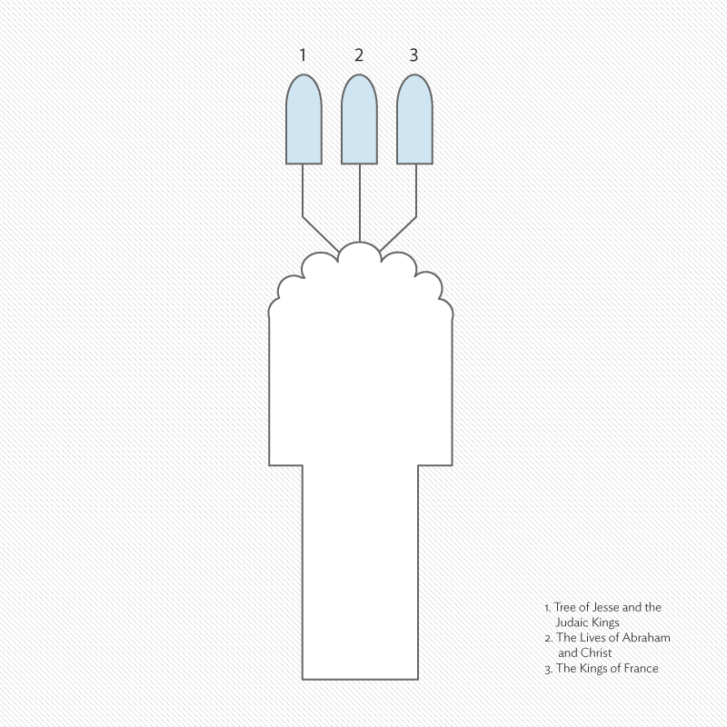
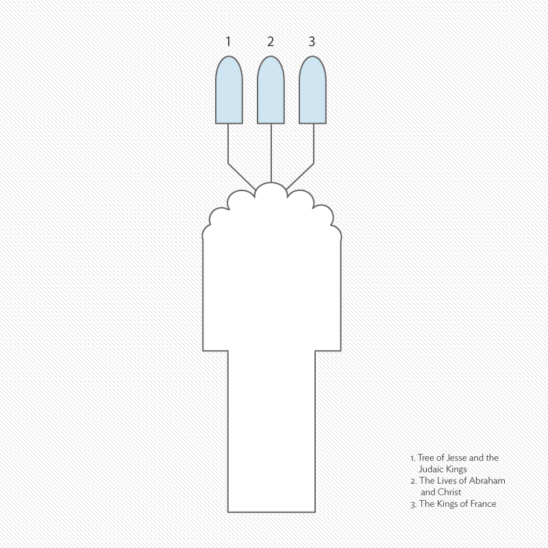

CHAGALL and Stained Glass
The 1914 bombing of Notre-Dame Cathedral in Reims during World War I left the structure in great disrepair. Chagall was commissioned in 1973 to create three windows for the choir chapel of the cathedral. An important part of France's history, the 13th-century church served as the coronation site for the French kings and exemplifies the soaring height and elegance of the French Gothic style. Using a rich blue to unify the design, Chagall drew upon a long tradition of aligning the royal ancestors of Christ with the French monarchs, depicting in each lancet the genealogy of the Judaic kings, the fathers of the Jewish and Christian traditions (Abraham and Christ), and the lineage of the Christian kings of France who were crowned at Reims.


 
